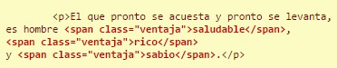
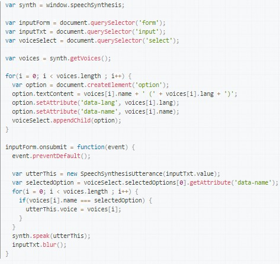

Select--Drown-Down list
The select element is used to create a drop-down list. The option tags within the select element define the available options in the list. The select element is a form control and can be used in a form to collect user input.
Example:

Span
It is an online container. Used to apply style to text or group elements online.
Example:
You want to put what Mr. Franklin considers as the advantages of not spending all day sleeping, appear emphasized in red. For this purpose, you can mark these advantages with the span element.
SpeechSynthesisUtterance
The SpeechSynthesisUtterance interface of the Web Speech API represents a speech request. It contains the content the speech service should read and information about how to read it (e.g. language, pitch and volume.) Example:
